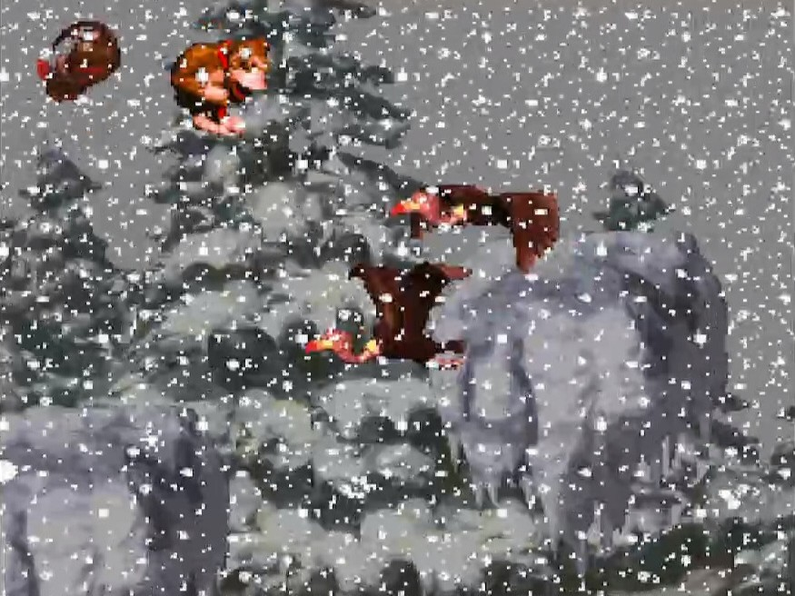

Les Mondes de Donkey Kong Country
Kongo Jungle
Jungle Hijinxs
Jungle Hijinxs est le premier niveau de Donkey Kong Country et le premier niveau de Kongo Jungle. C'est ici que vit Donkey Kong et donc là où il débute son aventure par la même occasion. Rambi le rhinocéros, le premier allié animal y fait une apparition.
Musique utilisée : DK Island Swing
Musique utilisée : DK Island Swing
Ropey Rampage
Ropey Rampage est le deuxième niveau du jeu et deuxième à se passer dans la jungle. Ce niveau comportant de nombreuses cordes, avec lesquelles le duo de singes peut se balancer de gauche à droite, se passe cette fois-ci sous la pluie, sous un ciel oragé.
Musique utilisée : DK Island Swing
Musique utilisée : DK Island Swing
Reptile Rumble
Reptile Rumble est le troisième niveau du jeu et le premier à prendre place dans une grotte. En plus des habituels crocodiles, on y retrouve également de nombreux Slippas (des ennemis serpent).
Musique utilisée : Cave Dweller Concert
Musique utilisée : Cave Dweller Concert
Coral Capers
Coral Capers est le quatrième niveau et le premier à se passer sous l'eau. Très connu pour sa musique, c'est ici qu'Enguarde l'espadon est introduit dans la série, très pratique pour se battre contre les ennemis aquatiques.
Musique utilisée : Aquatic Ambiance
Musique utilisée : Aquatic Ambiance
Barrel Cannon Canyon
Barrel Cannon Canyon est le cinquième niveau et le troisième à se dérouler au milieu de la jungle. Pas de pluie ici mais beaucoup de tonneaux cannon, un moyen très répandu pour se déplacer dans cet univers, on en retrouve un peu partout.
Musique utilisée : DK Island Swing
Musique utilisée : DK Island Swing
Very Gnawty's Lair
Very Gnawty's Lair est le sixième niveau et le premier boss. Le combat contre Very Gnawty est très simple : le seul moyen de défense de ce gros castor est de sauter partout !
Musique utilisée : Bad Boos Boogie
Musique utilisée : Bad Boos Boogie

Monkey Mines
Winky's Walkway
Winky's Walkway est le septième niveau et le premier de Monkey Mines. Prennant place sur une passerelle au dessus d'une mine, c'est l'endroit où l'on rencontre pour la première fois Winky la grenouille.
Musique utilisée : Life in the Mines
Musique utilisée : Life in the Mines
Mine Cart Carnage
Mine Cart Carnage est le huitième niveau du jeu et le premier en chariot de mine. Un des niveau les plus iconiques du jeu autant pour son gameplay que pour sa difficulté.
Musique utilisée : Mine Cart Madness
Musique utilisée : Mine Cart Madness
Bouncy Bonanza
Bouncy Bonanza est le neuvième niveau et le deuxième à se dérouler dans une grotte. La particularité de ce niveau est la présence de nombreux pneus qui font sauter tout Kong qui marcherait dessus mais aussi les kremlings. Winky revient également pour sauter sur les crocodiles.
Musique utilisée : Cave Dweller Concert
Musique utilisée : Cave Dweller Concert
Stop & Go Station
Stop & Go Station est le dixième niveau et premier à se passer directement dans la mine. Un autre niveau très connu pour sa mécanique : la lumière alterne entre "Stop" et "Go" et indique aux kremlings si ils peuvent avancer. Ces ennemis invincibles courent à toute vitesse le long du niveau si la lumière est réglé sur Go ce qui peut s'avérer particulièrement oppressant.
Musique utilisée : Misty Menace
Musique utilisée : Misty Menace
Millstone Mayhem
Millstone Mayhem est le onzième niveau et le premier à se passer dans un temple. Le principal danger ici est la présence de Gnawty (les ennemis castor) dans des roues. Ils prennent beaucoup de place et peuvent facilement blesser Donkey et Diddy.
Musique utilisée : Voices of the Temple
Musique utilisée : Voices of the Temple
Necky's Nuts
Necky's Nuts est le douzième niveau du jeu et le deuxième boss. Master Necky, le boss de ce niveau, se bat en crachant des noix sur les Kongs. Le pneu au centre du terrain premet à ces dernières d'atteindre la tête du boss pour la vaincre.
Musique utilisée : Bad Boss Boogie
Musique utilisée : Bad Boss Boogie

Vine Valley
Vulture Culture
Vulture Culture est le treizième niveau de Donkey Kong Country et le premier de Vine Valley. Les neckys et mini-neckys (les ennemis vautour) sont très présents dans ce niveau, bien qu'étant des obstacles assez dangeureux, ils peuvent néanmoins servir de plate-formes utile pour franchir certains trous.
Musique utilisée : Forest Frenzy
Musique utilisée : Forest Frenzy
Tree Top Town
Tree Top Town est le quatorzième niveau du jeu et le premier à se passer dans un village dans les arbres. Des tonneaux cannon sont utilisés pour passer d'un arbre à l'autre et franchir les trous entre les passerelles qui composent ce niveau.
Musique utilisée : Treetop Rock
Musique utilisée : Treetop Rock
Forest Frenzy
Forest Frenzy est le quinzième niveau du jeu et le deuxième et dernier à se passer dans la forêt. Cette fois des cordes suspendues bougent au dessus d'énorme fossés au-dessus desquels volent beaucoup d'ennemis qui ne manqueront pas de blesser Diddy et Donkey si ils ne parviennent pas à les éviter le long des cordes.
Musique utilisée : Forest Frenzy
Musique utilisée : Forest Frenzy
Temple Tempest
Temple Tempest est le seizième niveau et le deuxième et dernier à prendre place dans un temple. Les gnawtys dans des roues font leur retour mais cette fois-ci, ils pourchasseront les Kongs le long du niveau à la moindre occasion. Expresso l'autruche qui permet de planer fait également sa première apparition ici.
Musique utilisée : Voices of the Temple
Musique utilisée : Voices of the Temple
Orang-utan Gang
Orang-utan Gang est le dix-septième niveau et le quatrième et dernier à se dérouler dans la jungle. Les Manky Kongs (des ennemis singe) font rouler des tonneaux le long des arbres sur lesquelles le duo de protagonistes doivent grimper pour progresser. Au milieu de ces tonneaux, on retrouve 5 zones bonus ce qui en fait le niveau en comportant le plus du jeu.
Musique utilisée : DK Island Swing
Musique utilisée : DK Island Swing
Clam City
Clam City est le dix-huitième niveau et le deuxième à se passer sous l'eau. Enguarde fait son retour bien que trop faible face aux Clambo et les perles qu'ils projettent un peu partout dans mer.
Musique utilisée : Aquatic Ambiance
Musique utilisée : Aquatic Ambiance
Bumble B. Rumble
Bumble B. Rumble est le dix-neuvième niveau et le troisième boss. Le boss de ce niveau, Queen B., se bat assez simplement : elle se contenter de charger vers les singes. Ces derniers doivent alors se défendre à l'aide de tonneaux présents sur le terrain.
Musique utilisée : Bad Boss Boogie
Musique utilisée : Bad Boss Boogie

Gorilla Glacier
Snow Barrel Blast
Snow Barrel Blast est le vingtième niveau et le premier de Gorilla Glacier. Une fois de plus les tonneaux cannon sont très utiles pour franchir les obstacles que proposent ce dangereux canyon enneigé. Au fil du niveau se lève une tempête de neige qui recouvre l'écran plus ou moins l'écran.
Musique utilisée : Northern Hemispheres
Musique utilisée : Northern Hemispheres
Slipslide Ride
Slipslide Ride est le vingt-et-unième niveau et le seul à se passer dans une caverne gelée. Pour se déplacer dans ce réseau de grotte, un nouveau type de corde auxquelles s'accrocher apparaît : cette fois-ci elles agissent comme des ascenseurs et font monter ou descendre lorsqu'on s'y agrippe.
Musique utilisée : Ice Cave Chant
Musique utilisée : Ice Cave Chant
Ice Age Alley
Ice Age Alley est le vingt-deuxième niveau du jeu et le deuxième et dernier à se passer sur les sommets enneigés de l'île de Donkey Kong. Ce niveau très difficile contient beaucoup d'oiseaux : les mini-meckys qui crachent des noix mais aussi Expresso qui permet de planer au-dessus de la plupart des fossées.
Musique utilisée : Northern Hemispheres
Musique utilisée : Northern Hemispheres
Croctopus Chase
Croctopus Chase est le vingt-troisième niveau de Donkey Kong Country et le troisième à prendre place sous l'eau. Dans les eaux froides de Gorilla Glacier se cache un groupe de Croctopus (des ennemis poulpes) qui pourchasseront les Kongs à la moindre occasion.
Musique utilisée : Aquatic Ambiance
Musique utilisée : Aquatic Ambiance
Torchlight Trouble
Torchlight Trouble est le vingt-quatrième niveau et le troisième à se dérouler dans une grotte, celle-ci étant particulièrement mal éclairée. Squawks le perroquet, le dernier allié animal du jeu intervient pour éclairer les Kongs dans cette caverne.
Musique utilisée : Cave Dweller Concert
Musique utilisée : Cave Dweller Concert
Rope Bridge Rumble
Rope Bridge Rumble est le vingt-cinquième niveau du jeu et le deuxième et dernier à se passer dans un village dans les arbres. À la place de cannon cette fois-ci on trouve des pneus pour rebondir de passerelle en passerelle.
Musique utilisée : Treetop Rock
Musique utilisée : Treetop Rock
Really Gnawty Rampage
Really Gnawty Rampage est le vingt-sixième niveau et le quatrième boss. Tout comme Very Gnawty, Really Gnawty se bat majoritairement en sautant partout. Une tactique toujours aussi simple à laquelle s'ajoute des sauts à hauteur plus variable.
Musique utilisée : Bad Boss Boogie
Musique utilisée : Bad Boss Boogie

Kremkroc Industries, Inc.
Oil Drum Alley
Oil Drum Alley est le vingt-septième niveau et le premier de Kremkroc Industries, Inc. Le long couloir qui compose ce niveau contient beaucoup de barrils d'huile qui prennent feu et dont il faut se servir comme plate-forme.
Musique utilisée : Fear Factory
Musique utilisée : Fear Factory
Trick Track Trek
Trick Track Trek est le vingt-huitième niveau de Donkey Kong et le deuxième à prendre place sur des passerelles au-dessus d'un mine. L'élément central du niveau est une plate-forme qui suit un rail qui traverse tout le niveau. C'est là dessus que les Kongs doivent embarquer pour atteindre l'autre côté de cette caverne, et ce en évitant toutes sortes d'ennemis qui leur tomberaient dessus pendant le trajet.
Musique utilisée : Life in the Mines
Musique utilisée : Life in the Mines
Elevator Antics
Elevator Antics est le vingt-neuvième niveau du jeu et le quatrième à se passer dans un grotte. Un autre niveau assez difficile dans lequel des ascenseurs montent ou descendent continuellement.
Musique utilisée : Cave Dweller Concert
Musique utilisée : Cave Dweller Concert
Poison Pond
Poison Pond est le trentième niveau et le quatrième et dernier à être un niveau aquatique. Dans ces eaux troubles on retrouve beaucoup de Mincers (des ennemis ressemblant à des pneus) au lieu de Croctopus. Ils bougent généralement avec un mouvement circulaire et sont souvent en groupe ce qui les rend davantage dangeureux.
Musique utilisée : Aquatic Ambiance
Musique utilisée : Aquatic Ambiance
Mine Cart Madness
Mine Cart Madness est le trente-et-unième niveau et le second en chariot de mine. Pas forcément plus difficile que le précédent, celui-ci demandera parfois à changer de chariot pour continuer à avancer malgré les multiples rails manquants.
Musique utilisée : Mine Cart Madness
Musique utilisée : Mine Cart Madness
Blackout Basement
Blackout Basement est le trente-deuxième niveau et le deuxième et dernier à prendre place dans l'usine (après Oil Drum Alley). Il s'agit d'un autre niveau dont la mécanique principale tourne autour de la lumière, cette dernière s'éteignant régulièrement et éclairant ainsi partiellement le chemin.
Musique utilisée : Fear Factory
Musique utilisée : Fear Factory
Boss Dumb Drum
Boss Dumb Drum est le trente-troisième niveau et le cinquième boss. Cet énorme baril se défend en faisant apparaître des ennemis, il est cependant plutôt fragile et se brisera si il frappe trop de fois le sol.
Musique utilisée : Bad Boss Boogie
Musique utilisée : Bad Boss Boogie

Chimp Caverns
Tanked Up Trouble
Tanked Up Trouble est le trente-quatrième niveau et le premier de Chimp Caverns. Très similaire à Trick Track Trek, la plate-forme de ce niveau fonctionne au carburant. Il est donc nécessaire d'en amasser le plus possible pour être sûr d'atteindre l'autre bout de la caverne.
Musique utilisée : Life in the Mines
Musique utilisée : Life in the Mines
Manic Mincers
Manic Mincers est le trente-cinquième niveau et le cinquième et dernier à se passer dans une grotte. Les Mincers font ici leur retour ainsi que Rambi (bien qu'il ne puisse rien faire contre les Mincers).
Musique utilisée : Cave Dweller Concert
Musique utilisée : Cave Dweller Concert
Misty Mine
Misty Mine est le trente-sixième niveau et le deuxième niveau (après Stop & Go Station) et à se passer directement dans la mine. Cette caverne brumeuse comportent de nombreux barrils desquels apparaîssent continuellement des ennemis.
Musique utilisée : Misty Menace
Musique utilisée : Misty Menace
Loopy Lights
Loopy Lights est le trente-septième niveau et dernier à se passer dans la mine. Il est également le quatrième et dernier niveau à avoir pour mécanique principale la lumière : similaire à Blackout Basement, le passage sera régulièrement plongé dans l'obscurité. La différence est ici qu'il faut rallumer la lumière manuellement à l'aide de tonneaux placés sur le chemin.
Musique utilisée : Misty Menace
Musique utilisée : Misty Menace
Platform Perils
Platform Perils est le trente-huitième niveau et dernier à se passer sur des passerelles. Encore une fois similaire à Trick Track Trek, au lieu d'une unique plate-forme qui tient tout le niveau, cette fois il y a beaucoup plus et elles sont plus petites et avançent dans une direction spécifique avant de tomber.
Musique utilisée : Life in the Mines
Musique utilisée : Life in the Mines
Necky's Revenge
Necky's Revenge est le trente-neuvième niveau et le sixième boss. Après avoir combattu un autre Gnawty, c'est un autre Necky qu'il faut affronter en la présence de Master Necky Sr. Ce gros oiseau se comporte pareil à son semblable vu dans Monkey Mines.
Musique utilisée : Bad Boss Boogie
Musique utilisée : Bad Boss Boogie

Gang-Plank Galleon
Gang-Plank Galleon
Gang-Plank Galleon est le quarantième et dernier niveau du jeu. Le combat final prendre place contre K. Rool sur son bateau. Le roi crocodile se défend en lançant sa couronne en direction des singes, en sautant de gauche à droit du navire et en faisant tomber des boulet de canon.
Musique utilisée : Gang-Plank Galleon
Musique utilisée : Gang-Plank Galleon